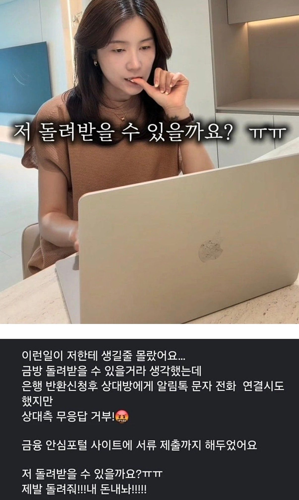

헐

헐
이건 무조건 은행가야함 개인적으로 해결할려고하면 안됨
이거 보니 생각나네 빗썸 비트코인 사건 비트코인 오지급 했는데 돌려줄 사람은 돌려줬는데 몇몇 사람은 안 돌려줬던뎅
당첨자 249명에게 총 62만 개의 비트코인이 잘못 지급되었으며, 1인당 평균 약 2,440억 원(2,000 BTC)에 달하는 금액
캬 ㅋㅋㅋㅋㅋㅋㅋㅋㅋㅋㅋㅋㅋㅋㅋㅋ
연락이 안 닿는 거 같은데
이거 그냥 상대방 줄긋기 시전가능 게다가 합의금 신청도 가능
융통가능한 다름금액있으면 확정 판결이라 그냥 잊어버리고 살다가 해결가능
다만 큰금액이거나 상대방이 ㄹㅇ 막장을 달리고 있다면 좆됨
저게 한 3만원인가 얼마까진 처벌이 안되고 그위로는 처벌된다고 어디서 들은거같은데
예전에 계좌로 잘못들어온돈 있어서 은행에 전화해서 돌려준적있음
나도 3년전에 월세 4개월째 집앞 타코야끼 트럭 사장님한테 이체하고있더라
언젠가 카뱅에 전화와서 오송금 한 것 같아서 반환해드린다고 연락 왔었음
근데 집주인은 4개월째 월세가 안들어오는데도 조용히 있던게 더 신기할 따름
이거때문에 법이 생겼는데
일단 원금의 90프론가 미리 받고 은행인가 정부에서 구상권청구, 죽을때까지 피말리게하면서 받아내는 제도가 있음
10프로를 포기할거냐 100프로 받으려고 피말릴거냐의 선택